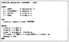
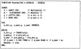

| Previous | Table of Contents | Next |
Notice that all of these conditions are met if m = 2k, a = 4c + 1, and b is odd. Here, c, b, and k are positive integers.
A generator that has the maximum possible period is called a full-period generator. All full-period generators are not equally good. Generators with lower autocorrelation between successive numbers are preferable. For example, both of the following two generators have the same full period, but the first one has a correlation of 0.25 between xn-1 and xn, whereas the second one has a negligible correlation of less than 2-18:
| xn = (234 + 1)xn-1 + mod 235 | (26.5) | |
| xn = (218 + 1)xn-1 + mod 235 | (26.6) |
All the LCGs presented so far are mixed LCGs. If the increment b is zero, as was the case in Lehmer’s original proposal, no addition is involved and the generator is called a multiplicative LCG. Such generators have the form
xn = axn-1 mod m
It is obvious that multiplicative LCGs are more efficient than the mixed LCGS in terms of processor time required for computation. Further efficiency can be obtained by choosing m to be a power of 2 so that the mod operation is trivial.
Thus, there are two types of multiplicative LCGs, those in which m = 2k and those in which m ≠ 2k.
The key argument in favor of choosing m = 2k is the ease of the mod operation. However, such generators do not have a full period. The maximum possible period for a multiplicative LCG with modulus m = 2k is only one-fourth the full period, that is, 2k-2. This period is achieved if the multiplier a is of the form 8i ± 3 and the initial seed is an odd integer.
xn = 5xn-1 mod 25
xn = 7xn-1 mod 25
Although the maximum period possible from a multiplicative LCG with m = 2k is only one-fourth the maximum possible, the resulting period may not be too small for many applications. In such cases, it may be more efficient to use a multiplicative generator than a mixed generator. It must be pointed out that low-order bits of random numbers obtained using multiplicative LCGs with m = 2k have a cyclic pattern, as discussed later in Section 26.8.
A solution to the small-period problem is to use a modulus m that is a prime number. In this case, with a proper choice of the multiplier a, it is possible to get a period of m - 1, which is almost equal to the maximum possible length m. Notice that unlike a mixed LCG, xn obtained from a multiplicative LCG can never be zero if m is prime. The values of xn lie between 1 and m - 1, and any multiplicative LCG with a period of m - 1 is called a full-period generator.
Not all values of the multiplier are equally good. It can be shown that a multiplicative LCG will be a full-period generator if and only if the multiplier a is a primitive root of the modulus m. By definition, a is a primitive root of m if and only if an mod m ≠ 1 for n = 1, 2,..., m - 2.
xn = 3xn-1 mod 31
53 mod 31 = 125 mod 31 = 1
| xn = 75xn-1 mod(231 - 1) | (26.7) |
Notice that 231 - 1 = 2,147,483,647 is a prime number and 75 is one of its 534,600,000 primitive roots.
One of the important cautions in implementing LCGs is that the properties are guaranteed only if the computations are done exactly, without any roundoff errors. This means that the computations should be done using integer arithmetic without overflow. In particular, the analyst should be careful in implementing such functions in languages like BASIC, in which all computation is done using real numbers. In such cases, truncation may cause the period to be reduced considerably.
The second problem in implementing LCGs is that the product axn-1 can exceed the largest integer allowed on the system, causing integer overflow. One solution to this problem due to Schrage (1979) is based on the following identity:
ax mod m = g(x) + mh(x)
where
g(x) = a(x mod q) - r(x div q)
and
h(x) = (x div q) - (ax div m)
Here, q = m div a, r = m mod a. The operation A div B is equivalent to dividing A by B and truncating the result. It can be shown that for all x’s in the range 1,2,..,m - 1, the expressions involved in computing g(x) are all less than m - 1. Also, if r < q, h(x) is either 0 or 1 and can be inferred from g(x); h(x) is 1 if and only if g(x) is negative. Thus, the operation ax, which could cause overflow, need not be executed. The following example illustrates the application of these implementation concepts.
xn = 75xn-1 mod(231 - 1)
xn = 16,807Xn-1 mod 2,147,483,647
The Pascal routine shown in Figure 26.2 will correctly implement this generator on systems where the largest positive integer supported is 231 - 1 or larger. If the largest positive integer is smaller, a real version of the routine shown in Figure 26.3 can be used provided the reals are represented with a 32-bit or larger mantissa (including the sign bit). On many systems, this would require the use of double-precision real numbers.
One method to test whether an implementation of this generator is correct is to compute x10,000 starting with x0. For a correct implementation, the result would be 1,043,618,065.

FIGURE 26.2 Random-number generator using integer arithmetic.

FIGURE 26.3 Random-number generator using real arithmetic.
Exercises 26.6 and 26.7 show that Schrage’s method cannot be used if the condition r < q is not satisfied.
| Previous | Table of Contents | Next |
){kind=link}
){kind=link}
){kind=link}
){kind=link}